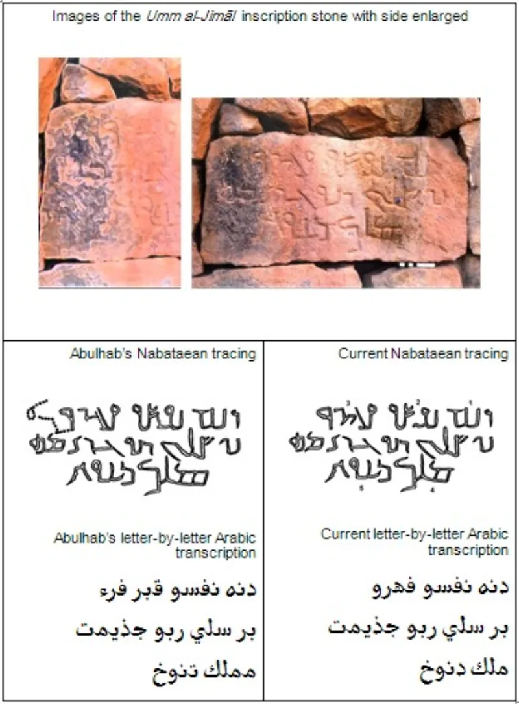

The Muslim answer holds up. Do not lead with this one.
That Muhammad is a myth, invented later by Arab empire-builders, with no evidence he existed. It was popularised by Robert Spencer's Did Muhammad Exist?
and by internet writers.
Non-Muslim sources name him within years of his death. The Doctrina Jacobi, from about 634 to 640, speaks of a prophet appearing among the Saracens.
The Armenian chronicle attributed to Sebeos, from the 660s, names him and describes his preaching of one God. There are also coins, inscriptions and the Dome of the Rock.
Patricia Crone. She was the most famous sceptical revisionist of Islamic origins, and the one critics love to quote.
She concluded flatly that there is no doubt Muhammad existed, and called the early outside evidence irrefutable.
Any informed Muslim can produce Crone's own words in a minute. So can a search engine.
And your credibility on everything else — Sanaa, the qira'at, source criticism — dies with the overclaim. You will have shown that you handle evidence to suit yourself.
The man existed. The real problem is the detailed biography.
The sira rests on sources compiled 150 to 200 years later, and Ibn Ishaq survives only through Ibn Hisham's edition. That is the honest and far more damaging point, and this site's hadith case already makes it.
"Of course Muhammad existed. My question is about where his biography comes from."

Do not use this: even Patricia Crone said there is no doubt he lived.
The correction is that sources outside Islam name him within years of his death. The Doctrina Jacobi, from about 634 to 640, speaks of a prophet who has appeared among the Saracens. The Armenian chronicle put down to Sebeos, from the 660s, names him and tells of his preaching of one God. There are coins too, and inscriptions, and the Dome of the Rock.
Then there is Patricia Crone. She was the best known of the doubters about Islam's origins, and the one critics love to quote. She said flatly that there is no doubt Muhammad lived, and called the early outside evidence irrefutable.
Drop it: one search hands your friend Crone's own words, and your credit dies.
Here is why it backfires. Any Muslim who has read a little, or run one search, will hand you Crone's own words and the seventh-century sources. Then your standing on all the rest goes with it — Sanaa, the qira'at, the study of sources. You will have shown that you bend evidence to suit yourself.
Say this instead. The man lived. The problem is his life story. The sira, the biography, rests on sources put together 150 to 200 years later, and Ibn Ishaq only survives through Ibn Hisham's edition. That point is honest, and it does far more damage. This site's hadith-chain-of-custody case already makes it.